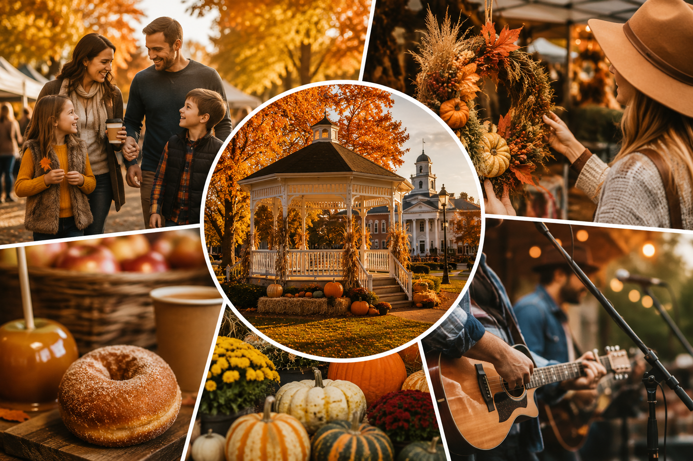
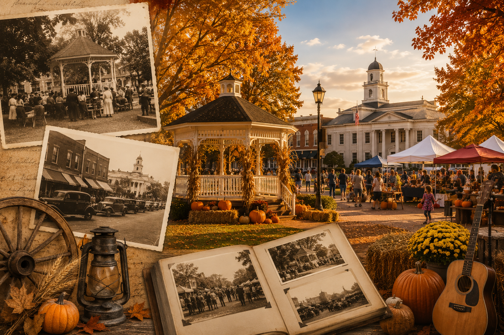
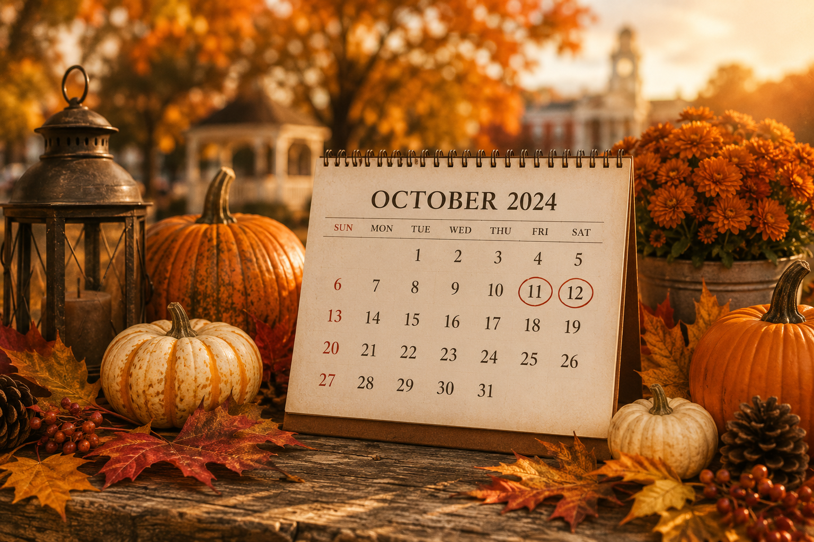

Magnolia Springs
2024 Fall Festival
2024 Fall Festival


The Magnolia Springs Fall Festival began as a small community celebration of autumn and our historic downtown. Over the years, it has grown into one of the area's favorite annual traditions, featuring local vendors, live entertainment, family activities, and seasonal attractions. Today, the festival continues to celebrate community spirit, support local businesses, and bring residents and visitors together to enjoy the best of the fall season.

Save these dates: Friday, October 11, 2024 and Saturday, October 12, 2024 only. Festival times start at 8AM and run to 9PM each day. See you there!